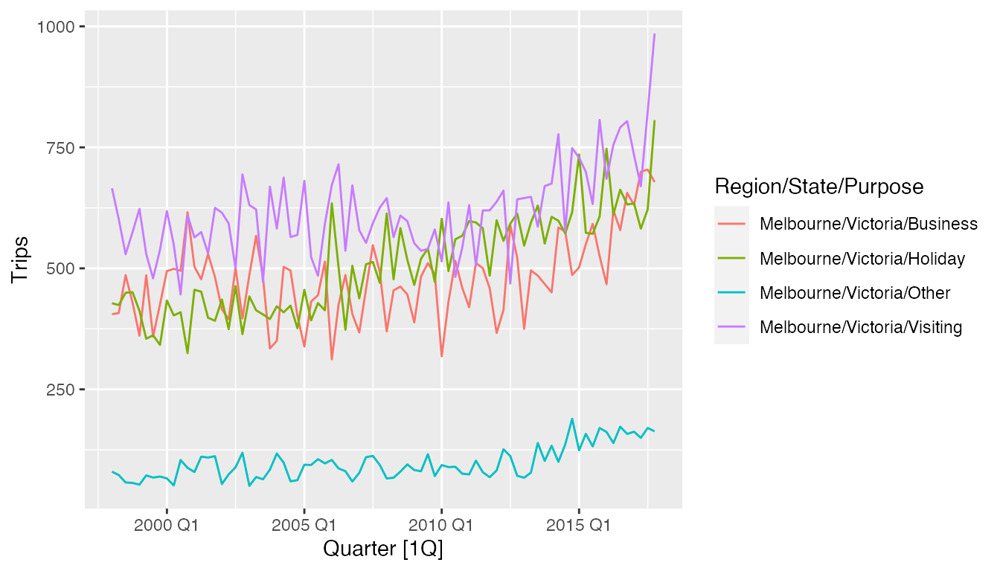
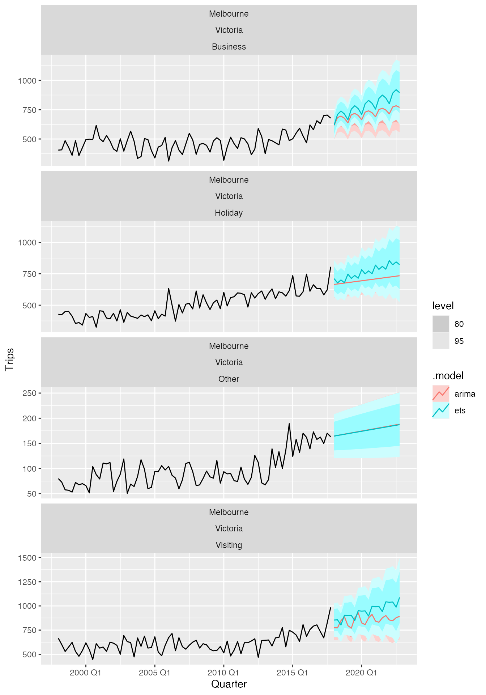

The fable package provides some commonly used univariate and multivariate time series forecasting models which can be used with tidy temporal data in the tsibble format. These models are used within a consistent and tidy modelling framework, allowing several models to be estimated, compared, combined, forecasted and otherwise worked with across many time series.
Suppose we wanted to forecast the number of domestic travellers to Melbourne, Australia. In the tsibble::tourism data set, this can be further broken down into 4 reasons of travel: “business”, “holiday”, “visiting friends and relatives” and “other reasons”. The first observation from each series are shown below.
tourism_melb <- tourism %>%
filter(Region == "Melbourne")
tourism_melb %>%
group_by(Purpose) %>%
slice(1)
#> # A tsibble: 4 x 5 [1Q]
#> # Key: Region, State, Purpose [4]
#> # Groups: Purpose [4]
#> Quarter Region State Purpose Trips
#> <qtr> <chr> <chr> <chr> <dbl>
#> 1 1998 Q1 Melbourne Victoria Business 405.
#> 2 1998 Q1 Melbourne Victoria Holiday 428.
#> 3 1998 Q1 Melbourne Victoria Other 79.9
#> 4 1998 Q1 Melbourne Victoria Visiting 666.The variable that we’d like to estimate is the number of overnight trips (in thousands) represented by the Trips variable. A plot of the data reveals that some trends and weak seasonality are apparent.

Two widely used models available in this package are ETS and ARIMA. These models are specified using a compact formula representation (much like cross-sectional linear models using lm()). The response variable (Trips) and any transformations are included on the left, while the model specification is on the right of the formula. When a model is not fully specified (or if the formula’s right side is missing completely), the unspecified components will be chosen automatically.
Suppose we think that the ETS model must have an additive trend, and want the other elements to be chosen automatically. This model would be specified using ETS(Trips ~ trend("A")). Similarly, a completely automatic ARIMA model (much like auto.arima() from the forecast package) can be specified using ARIMA(Trips). The model() function is used to estimate these model specifications on a particular dataset, and will return a “mable” (model table).
fit <- tourism_melb %>%
model(
ets = ETS(Trips ~ trend("A")),
arima = ARIMA(Trips)
)
fit
#> # A mable: 4 x 5
#> # Key: Region, State, Purpose [4]
#> Region State Purpose ets arima
#> <chr> <chr> <chr> <model> <model>
#> 1 Melbourne Victoria Business <ETS(A,A,A)> <ARIMA(0,1,2)(1,0,1)[4] w/ drift>
#> 2 Melbourne Victoria Holiday <ETS(M,A,A)> <ARIMA(0,1,1) w/ drift>
#> 3 Melbourne Victoria Other <ETS(A,A,N)> <ARIMA(0,1,1) w/ drift>
#> 4 Melbourne Victoria Visiting <ETS(M,A,A)> <ARIMA(0,1,1)(1,0,2)[4]>A mable contains a row for each time series (uniquely identified by the key variables), and a column for each model specification. A model is contained within the cells of each model column. In the example above we can see that the all four ETS models have an additive trend, and the error and seasonality have been chosen automatically. Similarly, the ARIMA model varies between time series as it has been automatically selected.
The coef() or tidy() function is used to extract the coefficients from the models. It’s possible to use select() and other verbs to focus on the coefficients from a particular model.
fit %>%
select(Region, State, Purpose, arima) %>%
coef()
#> # A tibble: 13 x 9
#> Region State Purpose .model term estimate std.error statistic p.value
#> <chr> <chr> <chr> <chr> <chr> <dbl> <dbl> <dbl> <dbl>
#> 1 Melbour… Victor… Business arima ma1 -0.555 0.130 -4.28 5.29e- 5
#> 2 Melbour… Victor… Business arima ma2 -0.233 0.129 -1.81 7.47e- 2
#> 3 Melbour… Victor… Business arima sar1 0.946 0.0634 14.9 1.07e-24
#> 4 Melbour… Victor… Business arima sma1 -0.772 0.145 -5.34 8.81e- 7
#> 5 Melbour… Victor… Business arima const… 0.192 0.213 0.903 3.69e- 1
#> 6 Melbour… Victor… Holiday arima ma1 -0.931 0.0851 -10.9 1.77e-17
#> 7 Melbour… Victor… Holiday arima const… 3.65 0.571 6.39 1.06e- 8
#> 8 Melbour… Victor… Other arima ma1 -0.750 0.0708 -10.6 8.19e-17
#> 9 Melbour… Victor… Other arima const… 1.24 0.640 1.93 5.70e- 2
#> 10 Melbour… Victor… Visiting arima ma1 -0.838 0.0652 -12.8 5.03e-21
#> 11 Melbour… Victor… Visiting arima sar1 0.659 0.193 3.41 1.03e- 3
#> 12 Melbour… Victor… Visiting arima sma1 -0.402 0.206 -1.95 5.47e- 2
#> 13 Melbour… Victor… Visiting arima sma2 0.322 0.143 2.26 2.68e- 2The glance() function provides a one-row summary of each model, and commonly includes descriptions of the model’s fit such as the residual variance and information criteria. Be wary though, as information criteria (AIC, AICc, BIC) are only comparable between the same model class and only if those models share the same response (after transformations and differencing).
fit %>%
glance()
#> # A tibble: 8 x 15
#> Region State Purpose .model sigma2 log_ik AIC AICc BIC MSE AMSE
#> <chr> <chr> <chr> <chr> <dbl> <dbl> <dbl> <dbl> <dbl> <dbl> <dbl>
#> 1 Melbo… Vict… Busine… ets 3.53e+3 -498. 1014. 1016. 1035. 3180. 3520.
#> 2 Melbo… Vict… Holiday ets 1.10e-2 -487. 992. 994. 1013. 2548. 2574.
#> 3 Melbo… Vict… Other ets 4.97e+2 -422. 853. 854. 865. 472. 512.
#> 4 Melbo… Vict… Visiti… ets 1.09e-2 -503. 1024. 1026. 1045. 3714. 3860.
#> 5 Melbo… Vict… Busine… arima 3.67e+3 NA 882. 883. 896. NA NA
#> 6 Melbo… Vict… Holiday arima 3.07e+3 NA 864. 865. 872. NA NA
#> 7 Melbo… Vict… Other arima 4.89e+2 NA 718. 719. 725. NA NA
#> 8 Melbo… Vict… Visiti… arima 4.24e+3 NA 893. 894. 905. NA NA
#> # … with 4 more variables: MAE <dbl>, log_lik <dbl>, ar_roots <list>,
#> # ma_roots <list>If you’re working with a single model (or want to look at one model in particular), the report() function gives a familiar and nicely formatted model-specific display.
fit %>%
filter(Purpose == "Holiday") %>%
select(ets) %>%
report()
#> Series: Trips
#> Model: ETS(M,A,A)
#> Smoothing parameters:
#> alpha = 0.03084501
#> beta = 0.03084499
#> gamma = 0.0001000967
#>
#> Initial states:
#> l b s1 s2 s3 s4
#> 424.0777 -2.535481 -26.7441 4.256618 -10.10668 32.59417
#>
#> sigma^2: 0.011
#>
#> AIC AICc BIC
#> 991.7305 994.3020 1013.1688The fitted values and residuals from a model can obtained using fitted() and residuals() respectively. Additionally, the augment() function may be more convenient, which provides the original data along with both fitted values and their residuals.
fit %>%
augment()
#> # A tsibble: 640 x 8 [1Q]
#> # Key: Region, State, Purpose, .model [8]
#> Region State Purpose .model Quarter Trips .fitted .resid
#> <chr> <chr> <chr> <chr> <qtr> <dbl> <dbl> <dbl>
#> 1 Melbourne Victoria Business ets 1998 Q1 405. 396. 9.54
#> 2 Melbourne Victoria Business ets 1998 Q2 408. 483. -75.1
#> 3 Melbourne Victoria Business ets 1998 Q3 486. 487. -1.13
#> 4 Melbourne Victoria Business ets 1998 Q4 429. 454. -25.2
#> 5 Melbourne Victoria Business ets 1999 Q1 361. 391. -30.3
#> 6 Melbourne Victoria Business ets 1999 Q2 486. 466. 19.9
#> 7 Melbourne Victoria Business ets 1999 Q3 359. 492. -133.
#> 8 Melbourne Victoria Business ets 1999 Q4 426. 424. 1.49
#> 9 Melbourne Victoria Business ets 2000 Q1 495. 364. 130.
#> 10 Melbourne Victoria Business ets 2000 Q2 499. 477. 22.0
#> # … with 630 more rowsTo compare how well the models fit the data, we can consider some common accuracy measures. It seems that on the training set the ETS model out-performs ARIMA for the series where travellers are on holiday, business, and visiting friends and relatives. The Evaluating modelling accuracy chapter from the Forecasting: Principles and Practices (3rd Ed.) textbook provides more detail in how modelling and forecasting accuracy is evaluated.
fit %>%
accuracy() %>%
arrange(MASE)
#> # A tibble: 8 x 12
#> Region State Purpose .model .type ME RMSE MAE MPE MAPE MASE
#> <chr> <chr> <chr> <chr> <chr> <dbl> <dbl> <dbl> <dbl> <dbl> <dbl>
#> 1 Melbo… Vict… Holiday ets Trai… 4.67 50.5 37.2 0.217 7.29 0.675
#> 2 Melbo… Vict… Busine… ets Trai… 3.31 56.4 42.9 -0.753 9.31 0.691
#> 3 Melbo… Vict… Busine… arima Trai… 2.54 58.2 46.0 -1.17 10.1 0.741
#> 4 Melbo… Vict… Holiday arima Trai… -4.64 54.3 41.4 -2.44 8.46 0.752
#> 5 Melbo… Vict… Other arima Trai… -0.344 21.7 17.0 -6.16 19.5 0.763
#> 6 Melbo… Vict… Other ets Trai… -0.142 21.7 17.0 -5.97 19.6 0.767
#> 7 Melbo… Vict… Visiti… ets Trai… 8.17 60.9 51.4 0.433 8.28 0.819
#> 8 Melbo… Vict… Visiti… arima Trai… 6.89 63.1 51.7 0.106 8.44 0.825
#> # … with 1 more variable: ACF1 <dbl>Forecasts from these models can be produced directly as our specified models do not require any additional data.
fc <- fit %>%
forecast(h = "5 years")
fc
#> # A fable: 160 x 7 [1Q]
#> # Key: Region, State, Purpose, .model [8]
#> Region State Purpose .model Quarter Trips .distribution
#> <chr> <chr> <chr> <chr> <qtr> <dbl> <dist>
#> 1 Melbourne Victoria Business ets 2018 Q1 619. N(619, 3533)
#> 2 Melbourne Victoria Business ets 2018 Q2 709. N(709, 3766)
#> 3 Melbourne Victoria Business ets 2018 Q3 738. N(738, 4042)
#> 4 Melbourne Victoria Business ets 2018 Q4 713. N(713, 4364)
#> 5 Melbourne Victoria Business ets 2019 Q1 664. N(664, 4735)
#> 6 Melbourne Victoria Business ets 2019 Q2 755. N(755, 5159)
#> 7 Melbourne Victoria Business ets 2019 Q3 784. N(784, 5640)
#> 8 Melbourne Victoria Business ets 2019 Q4 759. N(759, 6181)
#> 9 Melbourne Victoria Business ets 2020 Q1 710. N(710, 6786)
#> 10 Melbourne Victoria Business ets 2020 Q2 800. N(800, 7458)
#> # … with 150 more rowsThe resulting forecasts are contained in a “fable” (forecast table), and both point forecasts and forecast distributions are available in the table for the next five years. Confidence intervals can be extracted from the distribution using the hilo() function.
The hilo() function can also be used on fable objects, which allows you to extract multiple intervals at once.
fc %>%
hilo(level = c(80, 95))
#> # A tsibble: 160 x 8 [1Q]
#> # Key: Region, State, Purpose, .model [8]
#> Region State Purpose .model Quarter Trips `80%` `95%`
#> <chr> <chr> <chr> <chr> <qtr> <dbl> <hilo> <hilo>
#> 1 Melbour… Victor… Business ets 2018 Q1 619. [542.3864, 69… [502.0619, 73…
#> 2 Melbour… Victor… Business ets 2018 Q2 709. [630.4443, 78… [588.8099, 82…
#> 3 Melbour… Victor… Business ets 2018 Q3 738. [656.9891, 81… [613.8580, 86…
#> 4 Melbour… Victor… Business ets 2018 Q4 713. [628.7879, 79… [583.9734, 84…
#> 5 Melbour… Victor… Business ets 2019 Q1 664. [575.8480, 75… [529.1653, 79…
#> 6 Melbour… Victor… Business ets 2019 Q2 755. [662.5141, 84… [613.7848, 89…
#> 7 Melbour… Victor… Business ets 2019 Q3 784. [687.6922, 88… [636.7426, 93…
#> 8 Melbour… Victor… Business ets 2019 Q4 759. [658.1603, 85… [604.8230, 91…
#> 9 Melbour… Victor… Business ets 2020 Q1 710. [603.9336, 81… [548.0468, 87…
#> 10 Melbour… Victor… Business ets 2020 Q2 800. [689.3620, 91… [630.7735, 96…
#> # … with 150 more rowsYou can also see a plot of the forecasts using autoplot(). To see the historical data along with the forecasts you can provide it as the first argument to the function.

More model methods may be supported by particular models, including the ability to refit() the model to new data, stream() in new data to extend the fit, generate() simulated paths from a model, interpolate() missing values, extract components() from the fitted model, and display the model’s equation().
More information about modelling time series and using the fable package can be found in Forecasting: Principles and Practices (3rd Ed.) and in the pkgdown site.